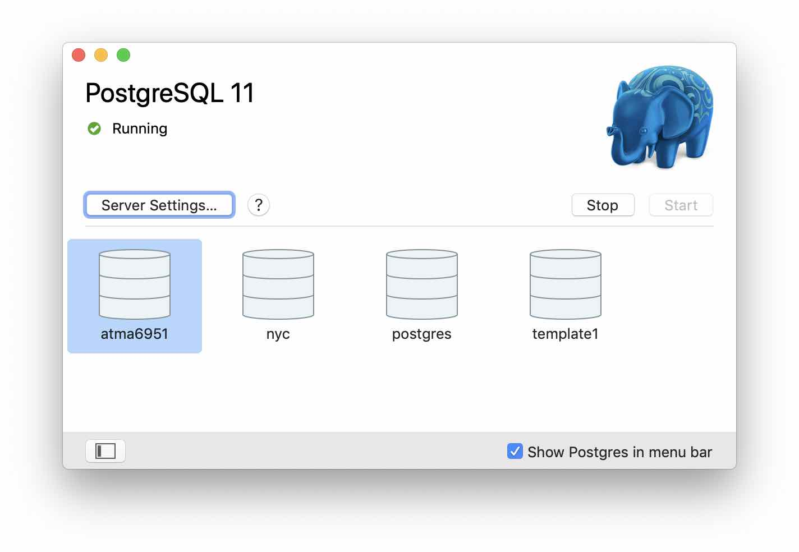
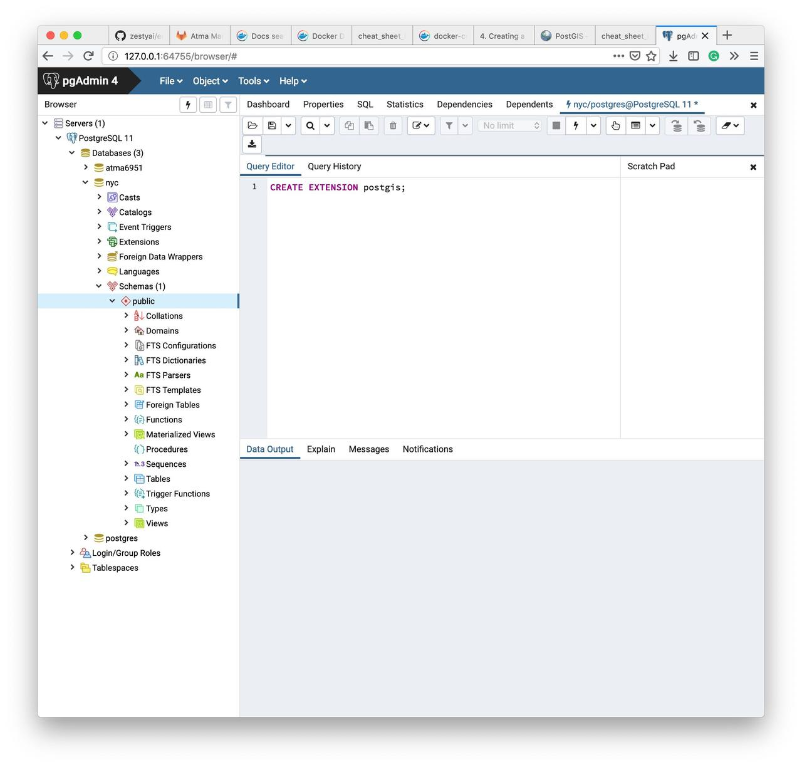
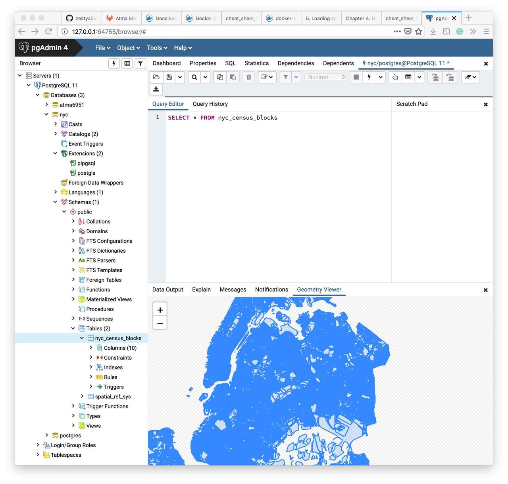

postgis-1
This is PostGIS
Set up
Installation
I am installing the all-in-one package - Postgres APP which inclues Postgres, PostGIS, PLV8. Once installed, it looks like below:

I am following the tutorial from here
Note: There is an alternate download called 'OpenGeo Suite', but this is no longer in active development. It may have been acquired by boundless and now it does not resemble its original suite of products. Instead, I am installing pgadmin to admin the DB. The new pgAdmin4 is a complete rewrite. It is web based, written in Python, Qt, JS and core components in C++.
Once you install both the Postgres database and PgAdmin4 app, start both, connect to the database server using localhost:5432 port (which you can look up from properties of db server). PgAdmin will now list the databases. Below is an image of the pgAdmin window running SQL queries on a custom DB I created.

SQLAlchemy set up
I am tripping when setting up sqlalchemy with postgres server in the geopandas env. It turns out, sqlalchemy requires a package called psycopg2 which is not installed by default. In a clean env, installing these two works well. I am trying out in the geopandas env now.
Note: all I had to do was remove and reinstall sqlalchemy and psycopg2. Net, I had to recreate the whole package
Introduction
PostGIS is a spatial database. It turns PostgreSQL database into a spatial database. PostGIS inherits all enterprise functionality of PostgreSQL. There are 3 aspects that make a database spatial - spatial data types - store shapes as points ,lines, polygons. They abstract and encapsulate spatial structures such as boundary, dimension. - spatial indexing - for efficient spatial operations - spatial functions - exposed in SQL for querying spatial properties and relationships. Eg: answers which objects are within this particular envelope.
True spatial databases treat spatial features as first class database objs. Spatial DBs are used not just in geospatial env, but to store data related to anatomy of human body, large-scale integrated circuits, molecular structures, EMF etc.
More about Spatial index: Bounding boxes are used for spatial containment queries. Computing containment for polygons is very computationally intensive, hence it is performed over their respective bounding boxes. Computing this for rectangles is very simple and fast.
More about spatial functions: 5 main categories of spatial functions - conversion of geometries - management of spatial tables, PostGIS administration - retrieval of properties and measurements of geometries - comparison of geometries, wrt spatial relationship - generation of new geometries.
Notes: The PostGIS team outlines their reason behind choosing PostgreSQL as the foundation and not some other popular open source ORDBMS like mySQL.
History of PostGIS
Started in May of 2001. For many years, the functionality, power and ease of use was limited. MapServer became the first app to provide visualization of PostGIS. Later, another open source initiative GOES (Geometry Engine, Open Source) was integrated with PostGIS to make it complete
Tutorial
Follow tutorial from postgis-intro
- To enable postGIS, run
CREATE EXTENSION postgis;. Run by hittingF5. Then confirm it is installed by runningSELECT postgis_full_version(); - To import data into postGIS, the tool
shp2pgisextension does not seem available. Hence I did the import using QGIS. You can connect to the postGIS from qGIS using the same database server, port, db name. Then install the DB Admin QGIS extension to manage postGIS. The db manager looks like below:
Once imported, you can query for the features from pgAdmin and also visualize the results like below: 
Working with Geometries in PostGIS
A special table called geometry_columns exists which lists all tables within postGIS that are spatial. It lists details such as what their SRID is, their geometry type etc.
SELECT * FROM geometry_columns
Spatial functions can be used to collect information about each feature (row)
SELECT name, ST_GeometryType(geom), ST_NDims(geom), ST_SRID(geom) FROM sample_geometries;
will return
name | st_geometrytype | st_ndims | st_srid -----------------+-----------------------+----------+--------- Point | ST_Point | 2 | 0 Polygon | ST_Polygon | 2 | 0 PolygonWithHole | ST_Polygon | 2 | 0 Collection | ST_GeometryCollection | 2 | 0 Linestring | ST_LineString | 2 | 0
Note: Spatial functions in postGIS are generally prefixed with ST..
Spatial functions for Point geometries
Thus, to get the X, Y coordinates of a point,
SELECT ST_X(geom), ST_Y(geom) FROM sample_geometries where name='Point'
Spatial functions for Linestring geometries
-
ST_Length(geometry)returns the length of the linestring -
ST_StartPoint(geometry)returns the first coordinate as a point -
ST_EndPoint(geometry)returns the last coordinate as a point -
ST_NPoints(geometry)returns the number of coordinates in the linestring
Spatial functions for Polygon geometries
-
ST_Area(geometry)returns the area of the polygons -
ST_NRings(geometry)returns the number of rings (usually 1, more of there are holes) -
ST_ExteriorRing(geometry)returns the outer ring as a linestring -
ST_InteriorRingN(geometry,n)returns a specified interior ring as a linestring -
ST_Perimeter(geometry)returns the length of all the rings
Spatial functions for Geometry Collections
Geometry collections are the PolyLine, Multipoint, etc.
-
ST_NumGeometries(geometry)returns the number of parts in the collection -
ST_GeometryN(geometry,n)returns the specified part -
ST_Area(geometry)returns the total area of all polygonal parts -
ST_Length(geometry)returns the total length of all linear parts
Some SQL queries
SELECT boroname, SUM(popn_white)/SUM(popn_total) AS white_pct FROM nyc_census_blocks GROUP BY boroname;